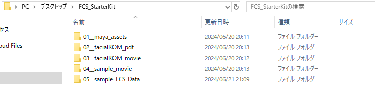
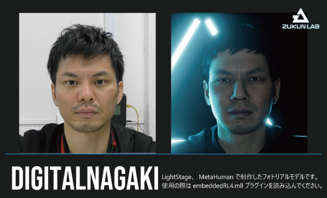
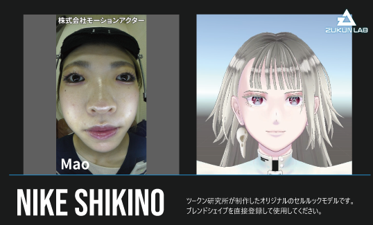
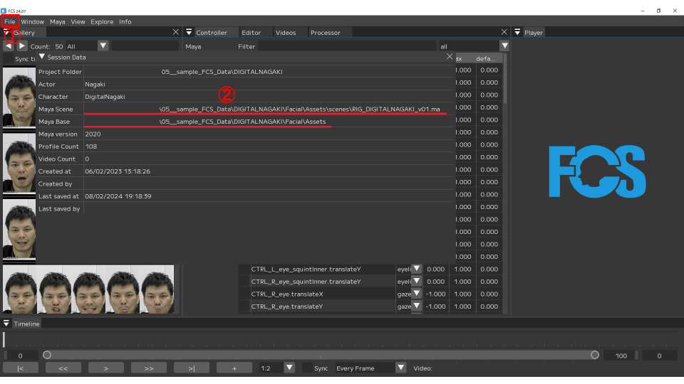
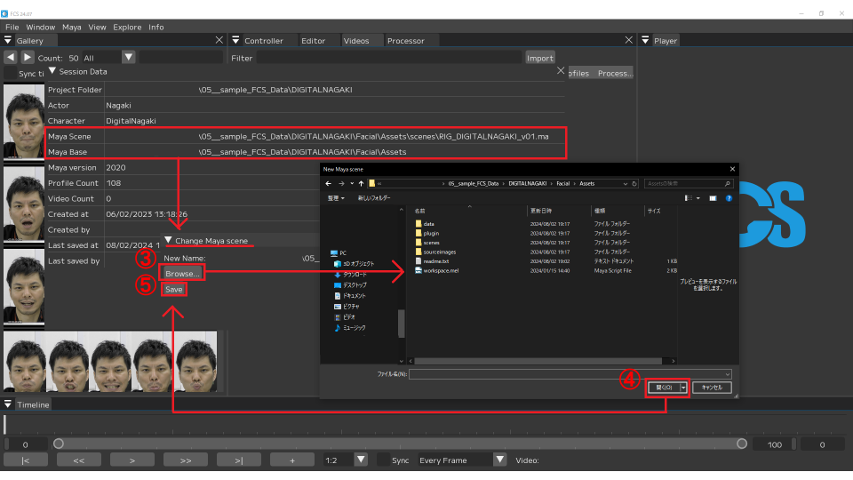
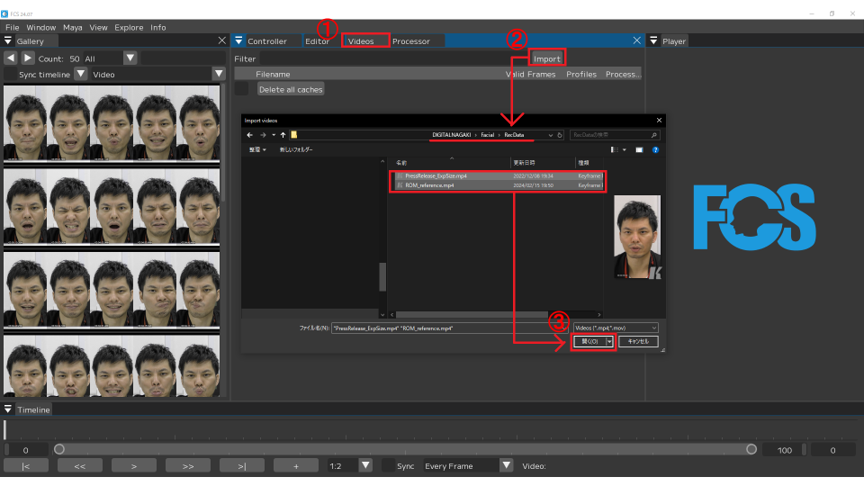

FCS Starter Kit
FCS comes with a starter kit for all trial and licensed users. With the starter kit you should be able to create 3D facial animation, and experience the entire workflow using FCS.
Content of FCS Starter Kit
FCS Starter Kit includes the following:

3D model in Maya
PDF including the recommended Range of Motion (ROM)
Facial ROM animation
Sample video for generating facial animation
Sample FCS session with retargetted data
Note
Some of the content requires external plugins rendering
1. Mayaの3Dモデルデータ
Maya folder contains the following 2 models
DIGITAL NAGAKI

DIGITAL NAGAKI is our digital human model created based on UnrealEngine MetaHumanFor more information about MetaHuman, please refer toEpic Games MetaHuman
DIGITAL NAGAKI uses the MetaHuman control rig.Please refer to EpicGames Youtube channel if you require more information.
Please read the readme.txt included in your starter kit
Note
DIGITAL NAGAKIをご利用される際は、Unreal Engineでの確認 - レンダリングが前提となります。
事前にUnreal Engineのインストール、確認用プロジェクトの作成をお願いいたします。
Unreal Engineに関する詳細は、Epic Games社が提供するUnreal Engine紹介ホームページをご確認ください。
Caution
You cannot use render this rig in Maya or Unity* as per the Epic games license. *Game engine created by Unity Technologies
NIKE SHIKINO

NIKE SHIKINO is an original cel-shaded 3D model created by Zukun Laboratory. The model’s face is equipped with blend shapes that conform to Apple ARKit standards, allowing for animation by changing the values of each target shape *Developed and provided by Apple, this AR framework adopts 52 expression target shapes in its facial tracking system.
NIKE SHIKINO is compatible with Maya, Unreal Engine, and Unity. Please make sure to read the included readme.txt file before use.
2. フェイシャルROM体操の表情一覧PDF
In video analysis using facial capture, we can improve the efficiency of analysis by understanding the intensity limits of the expressions that the recorded person can make. The series of expression patterns aimed at capturing the range of motion (ROM: Range of Motion) of various facial parts, such as the eyebrows, eyes, and mouth, is called Facial ROM Exercises. In this starter kit, we have included a PDF containing a list of approximately 50 expression patterns that Zukun Laboratory actually uses in our facial capture recordings.
3. フェイシャルROM体操動画
This is a video featuring Facial ROM patterns. Please import it into FCS for use.
4. 動画解析 - アニメーション出力用のサンプル動画
This is a sample video used for video analysis. Please import it into FCS for use.
サンプル動画の内容について
DIGITAL NAGAKI: FCS Introduction Video
NIKE SHIKINO: A total of 9 different emotion-based dialogue videos (the dialogue itself is the same in all videos) *Recorded with the cooperation of Mao from Motion Actor Co., Ltd.
5. Profile作成済みのFCS Session参考例データ
Here’s the revised translation without the word “exercise”: This is the FCS session data for DIGITAL NAGAKI & NIKE SHIKINO, created as reference examples for trying out video analysis. Both include approximately 50 profiles already created from the Facial ROM videos, allowing you to experience FCS without needing to start a session from scratch. By loading the sample video, you can create profiles directly.
Warning
Profile作成をしなくても解析自体は可能ですが、それだけでは精度が十分ではないため、サンプル動画内からも最低1以上のProfile作成が必要です。
Profileの具体的な作成方法については、Profileの作成ページをご確認ください。
参考例データでは、解析に使用する各データ（スターターキットコンテンツ1 - 3 - 4と同一内容）が、予め作成されたFCS Sessionフォルダ構造内に置かれています。
FCS Sessionフォルダ構造の詳細については、Session作成もしくはオープンページをご確認ください。
Upon downloading, the paths for the Maya data and sample videos will be different, so they need to be reconfigured. Please refer to the following steps for how to reconfigure the Maya data paths and import the sample videos.
Mayaデータのパス再設定方法
For the Maya data, both the Maya Scene path and the Maya Base path need to be reconfigured in FCS. You can reconfigure both paths using the same steps outlined below.
① After launching FCS and opening the session, go to File ▶ Session ▶ Info to open the Info window. ② Right-click in the field where the current path is displayed, then click the Edit button. ③ In the Change window, click the Browse button to open the file dialog. ④ Select the relevant file within the FCS session folder structure and click the Open button. ⑤ After confirming that the path has been updated in the Change window, click the Save button.
 
サンプル動画のインポート方法
You can import the sample video by following the steps below.
① After launching FCS and opening the session, open the Videos window. ② Click the Import button to open the file dialog. ③ Select the relevant file within the FCS session folder structure and click the Open button.
